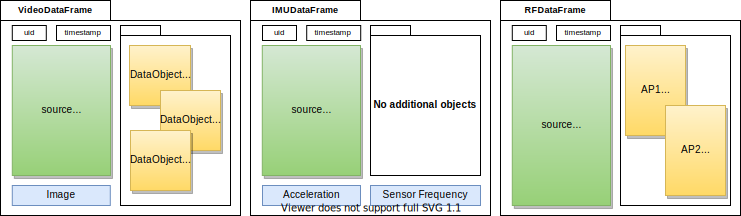

Create a new data frame
Data frame to copy
Create a new data frame
Source data object
Data frame created timestamp (ISO 8601)
Data frame sensor data pheonomenon timestamp (ISO 8601)
Data frame unique identifier
Source object clone that captured the data frame
Source data object
Set the source object clone that captured the data frame
Source data object
Source data object
Add a new object relevant to this data frame
Relevant object
Add a new reference space relevant to this data frame.
Relevant reference space
Clone the data frame
Cloned data frame
Get a specific object by its identifier
Object UID
Data object if found
Get known objects used in this data frame
Data object type
Array of found data objects
Check if the data frame has an object
Data object to find
Object exist
Remove an object from the data frame
Object to remove
A data frame is information that is passed through each node in a positioning model.

Usage
Creation
A data frame can be created with an optional source DataObject that represents the object responsible for generating the frame.
Creating a custom DataFrame
Custom data frames can be created by extending the default DataFrame class. Important when handling data frames (and objects) is to add serializable decorators.
Adding DataObjects
Adding data object will clone the data objects to the data frame. Any changes made to the object after cloning will not be applied to the data frame.